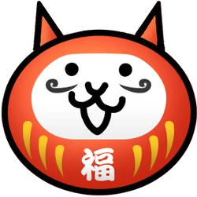

Кошачья капсула (или Гача (ガチャ) в японской версии) — это область, где игрок может потратить кошачьи билеты, редкие кошачьи билеты, счастливые билеты и кошачью еду, чтобы получить кошачьих юнитов и капсулы способностей. Заработанные награды затем либо немедленно используются, либо немедленно обмениваются на опыт/NP, сохраняются в хранилище для использования позже, а некоторые даже можно обменять на редкий билет!
